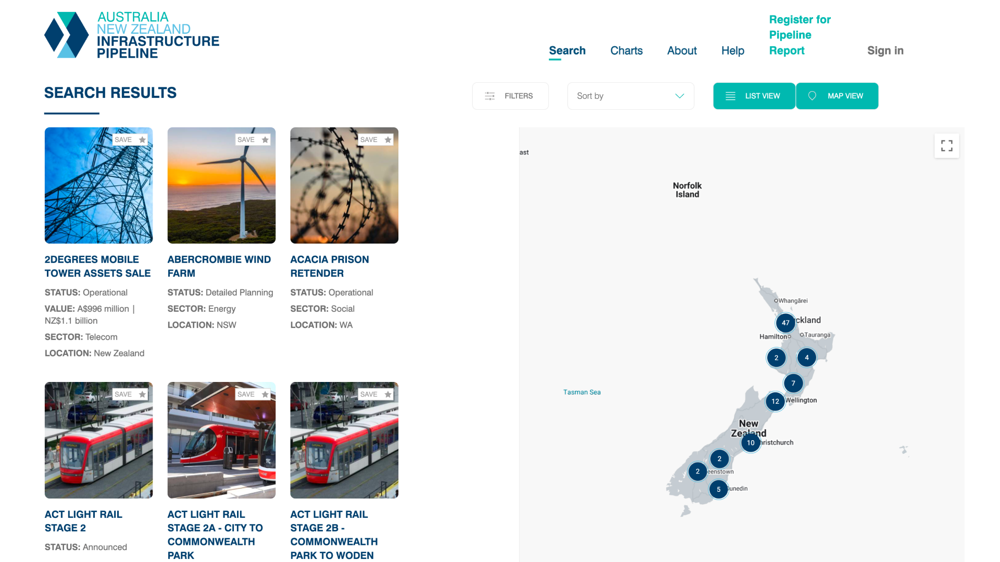

ANZIP — Infrastructure Pipeline

ANZIP is the authoritative infrastructure pipeline dataset for Australia and New Zealand. I collaborated as UX/UI designer to help bring the product to life, turning a spreadsheet-grade dataset into something investors, agencies and industry could actually use and trust.
The problem
Hundreds of live projects existed in the data, but with no purpose-built way to search, filter, or trust that it was current.
The work
Built a search-first interface with deep filtering, dynamic charts for pipeline status and spend, lifecycle tracking so freshness was visible at a glance, an interactive map, and a private-finance module surfacing investable projects.
Outcome
in candidate projects surfaced for investors
jointly funded by government and industry
use by industry, government and investors
For more details on the project, contact me for a deep dive on the topic — hello@jacoblaird.com.